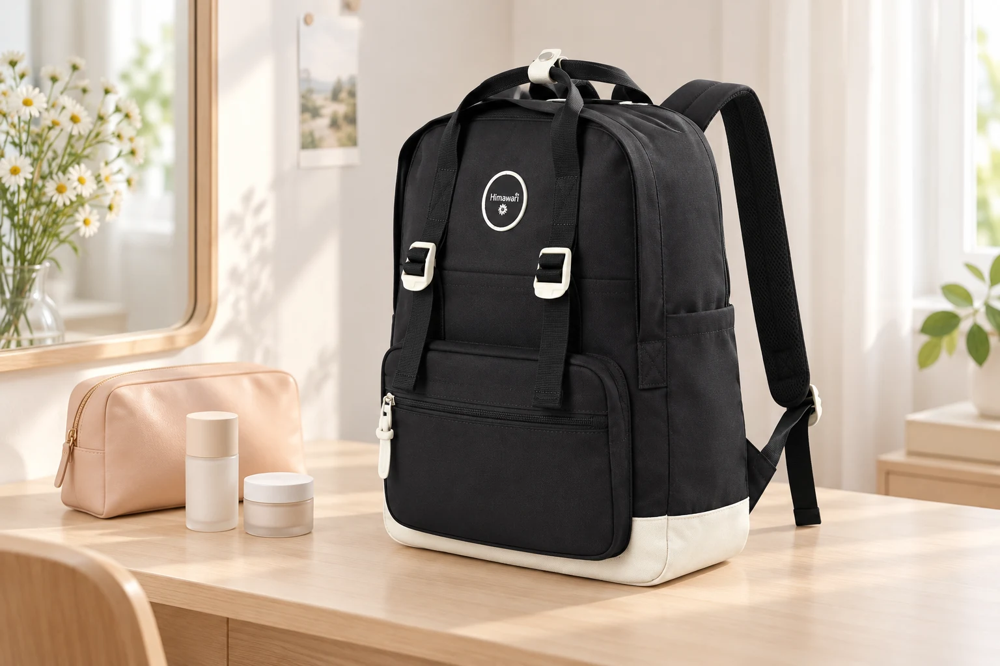

백팩에서 화장품 파우치를 꺼낼 때 남겨둘 손의 공간

화장품 파우치를 백팩에 넣고 지퍼가 닫히면 준비가 끝난 듯합니다. 밖에서 파우치를 꺼내려니 손잡이나 모서리가 다른 짐 아래에 가려져 있을 수도 있습니다. 파우치가 차지하는 부피에 더해 손으로 잡아 올릴 공간을 함께 남겨야 하는 이유입니다. 채워진 파우치를 하나의 물건으로 놓고, 백팩에서 꺼내 밖에서 펼친 뒤 다시 담는 과정을 이어봅니다.
준비할 제품은 각 용기의 안내에 맞는 운반 상태로 정리합니다. 파우치에 모두 넣은 뒤 정상적으로 닫히는지 보고 전체 외형을 확인합니다. 빈 파우치는 납작해도 실제 용기가 들어오면 바닥과 모서리의 두께가 달라집니다. 서 있는 병과 납작한 케이스를 함께 넣었다면 어떤 부분이 더 튀어나오는지 볼 수 있습니다. 백팩에서 비교할 대상은 이 상태의 파우치입니다.
파우치의 잡을 면이 다른 짐에 가려진다면
파우치 손잡이가 있는 경우에는 백팩 입구에서 그것을 잡을 수 있는지 봅니다. 손잡이가 보인다는 것과 파우치를 자연스럽게 끌어올릴 수 있다는 것은 별도로 확인할 수 있습니다. 양옆에 책과 물병이 밀착해 있다면 손이 들어갈 여유가 줄어들 수 있습니다. 손잡이를 계속 당겨 좁은 틈에서 빼기보다 주변 물건을 어느 방향으로 놓았는지 살펴봅니다.
손잡이 없이 본체를 잡는 파우치라면 손가락이 닿을 면을 남깁니다. 가장 얇은 쪽을 아래로 끼워 넣으면 공간을 덜 차지해 보여도 꺼낼 때 넓은 면을 잡기 어려울 수 있습니다. 평소 짐을 넣고 파우치만 한 번 꺼내봅니다. 다른 작은 물건이 함께 움직이거나 가방 안쪽의 원단이 따라 올라오면 위치를 바꾸어볼 수 있습니다. 파우치의 모양과 실제 손동작을 같이 보는 과정입니다.
파우치를 가방 위쪽에 두는 방법이 맞는 날도 있습니다. 이때는 백팩 여밈의 곡선이나 손잡이 아래 공간과 겹치는지 봅니다. 닫힌 파우치가 지퍼 선 위로 올라오면 물건을 더 아래로 눌러 넣는 대신 전체 배치를 조정합니다. 파우치가 들어갈 높이를 먼저 만들고, 다른 소지품을 더한 뒤에도 잡을 면이 남는지 확인합니다. 위쪽이라는 위치 이름만으로 접근을 결정하지 않습니다.
백팩 아래쪽에 둘 때는 바닥 가까이에 어떤 물건이 있는지 봅니다. 파우치의 넓은 면이 자연스럽게 놓이는지, 둥근 소품 위에 걸쳐 있는지 살펴봅니다. 자주 쓰지 않는다면 꺼낼 순서가 뒤여도 괜찮을 수 있지만, 필요한 순간마다 큰 파일을 모두 빼야 한다면 그 방식이 맞는지 생각합니다. 파우치를 얼마나 자주 쓸지가 같은 가방 안에서도 위치를 바꾸는 이유가 됩니다.
Himawari No.1088M은 평소 개인 소지품과 화장품 파우치를 함께 준비할 백팩의 예로 살펴볼 수 있습니다. 이 모델의 외부 크기는 28 × 41.5 × 14cm입니다. 안쪽의 실제 여유는 별도로 확인하고, 자신의 파우치를 채운 상태로 넣고 꺼내는 동작을 비교합니다.

일하는 장소에 가방을 두고 파우치만 다른 곳으로 가져갈 계획이라면 통째로 꺼낼 수 있는 구성이 편할 수 있습니다. 필요한 용기 몇 개만 백팩의 포켓에 나누어 넣으면 물건을 모으는 범위가 커집니다. 사용량이나 제품 수를 정하는 일과 가방에서 꺼낼 단위를 정하는 일은 나누어 볼 수 있습니다. 실제로 한 번에 가져갈 묶음이 무엇인지 먼저 정하면 포켓 배치도 단순해집니다.
파우치에 계속 물건을 더했다면 백팩의 공간도 다시 봅니다. 더 큰 파우치로 바꾸면 내부의 소품은 정돈되어도 가방에서 잡을 여유가 줄어들 수 있습니다. 이번 외출에 필요한 구성인지 확인하고, 닫힌 파우치의 폭과 두께를 주변 짐과 함께 비교합니다. 자주 쓰는 작은 제품을 꺼내기 위해 파우치 전체를 비워야 한다면 파우치 안의 분류를 먼저 조정할 수도 있습니다.
가방 밖에서 펼친 파우치가 돌아오는 방향
파우치를 꺼낼 장소에서는 사용할 면과 백팩을 둘 위치를 정합니다. 열린 파우치를 가방 입구에 걸쳐 두면 내용물을 고르는 동안 가방까지 함께 움직일 수 있습니다. 작은 보관품 하나를 안정적으로 놓을 면이 있는지 보고, 필요한 묶음을 밖으로 옮긴 뒤 백팩의 여밈을 정리합니다. 사용할 공간이 좁다면 펼칠 범위를 줄일 수 있는 파우치 구성을 고릅니다.
사용한 물건은 각 용기의 안내에 맞게 정리한 뒤 원래 파우치로 돌립니다. 그다음 채워진 파우치가 닫힌 상태인지 확인하고 백팩에 넣습니다. 파우치를 열어 둔 채 가방 안에서 남은 제품을 모으는 순서보다, 한 묶음으로 마친 뒤 이동하면 백팩 바닥에 작은 소품이 따로 남는지 알아보기 쉽습니다. 가방은 정리한 파우치를 옮기는 역할을 맡을 수 있습니다.
파우치가 밖에 있는 동안 받은 종이나 벗은 옷을 그 빈자리에 넣었는지도 봅니다. 다시 넣기 어려워졌다면 새로 생긴 짐의 위치를 정합니다. 파우치를 원래 자리로 밀어 넣어 모양을 맞추기보다 지금의 짐을 기준으로 비교합니다. 용기 자체의 상태와 백팩 안의 배치가 각각 준비되어 있어야 귀가할 때도 필요한 물건을 같은 위치에서 찾을 수 있습니다.
가방 안쪽에 흔적이 보이면 어느 묶음이 닿았는지 살펴보고 현재 상태를 남깁니다. 용기를 정리하는 방법과 백팩 표면의 관리 방법은 각 안내에 따라 진행합니다. 다음 외출의 배치는 흔적이 생긴 위치를 참고해 바꿀 수 있습니다. 파우치가 물건을 한데 모으는 역할을 했는지, 물건을 꺼내려면 주변 짐을 얼마나 움직였는지를 나누어보면 조정할 부분이 구체적입니다.
집에서는 파우치를 꺼내 필요한 제품과 보관품을 정리합니다. 같은 백팩을 다음날 쓸 예정이어도 실제 구성이 달라지면 잡을 위치를 다시 볼 수 있습니다. 파우치를 넣기 전의 빈 공간과 넣은 뒤 손이 들어갈 여유를 함께 확인합니다. 가방을 열었을 때 파우치의 어느 면을 잡을지 분명하고, 사용 뒤 닫힌 묶음이 같은 길로 돌아올 수 있는 배치를 골라봅니다.